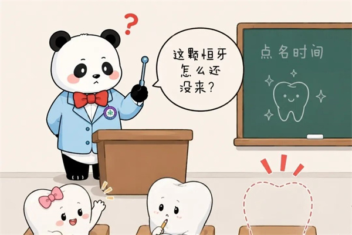

学院通知 · 教学通知
乳牙已经搬走，恒牙为何迟迟不来报道？
发布时间：2026/06/10
孩子乳牙早就掉了，空出的牙坑静静躺了大半年还不见恒牙的踪影。这时就有家长心里犯嘀咕了： “是不是恒牙长不出来了？” “是不是被什么东西卡住了？” 其实这种情况在儿童换牙期特别常见，专业上叫 【恒牙萌出过迟】 ，熊猫er牙医这就带你详解。 一、牙龈太厚，恒牙顶不破 乳牙因为虫牙、外伤等过早脱落，孩子可能会习惯用牙龈去咬东西。时间一长，局部牙龈可能 角化增生 ，变得又厚又韧，像“盖子”一样盖在恒牙上面，恒牙就不容易顶破萌出。 牙龈过厚阻碍右上颌中切牙萌出 救牙攻略： 若 X 光显示恒牙位置正常，医生可能在局部麻醉下做开窗助萌术，帮助牙齿“露个头”。 二、恒牙“迷路”了 恒牙胚位置、角度异常， 萌出轨道偏离正常 方向 ，无法垂直向上生长，滞留于牙槽骨内，看上去就是乳牙掉了，恒牙久久不萌出。 右上颌中切牙牙轴方向异常导致迟萌 救牙攻略： 通过影像学检查评估偏移程度，偏移明显时可以通过正畸牵引引导恒牙回归正常萌出轨道。 三、恒牙先天缺失 属于先天性牙齿发育异常，颌骨内无恒牙胚发育。因为没有接替的恒牙，乳牙脱落后会出现永久性缺牙。 恒牙胚先天性缺失 救牙攻略： 拍片确诊后，需做好间隙管理，保护牙槽骨发育。条件允许，可通过正畸关闭缺牙间隙；条件不合适则可待颌骨发育稳定后，通过种植、义齿等方式填补缺牙。 四、恒牙遇到“拦路虎” 颌骨内的多生牙、牙瘤、囊肿等占位，堵塞、压迫恒牙萌出通道，阻挡恒牙向上生长，造成萌出延迟。 多生牙阻碍右上颌中切牙萌出 救牙攻略： 借助影像检查精准定位病灶，通过微创手术拔除多生牙、摘除牙瘤或囊肿，疏通萌出通道。 五、恒牙被“抢座 ” 乳牙过早脱落，缺牙区域缺乏支撑，邻牙逐渐倾斜移位，挤占恒牙专属萌出间隙，导致恒牙空间不足、萌出受阻。 邻牙位移挤占恒牙萌出间隙 救牙攻略： 及时开展间隙管理，利用专业器械维持正常牙间隙，防止邻牙继续移位。已出现牙列歪斜、空间不足的情况，可通过早期正畸干预。 熊猫er牙医提醒您， 遗传或全身性疾病 也可能导致恒牙“迟到”，如甲状腺功能异常、锁骨颅骨发育不全等。遇到这些情况，要先进行全身检查，再请医生制定合适的治疗方案哦。
